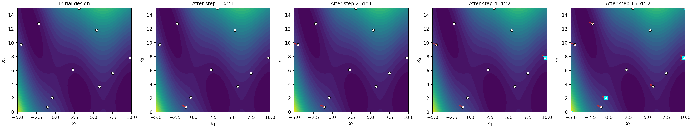
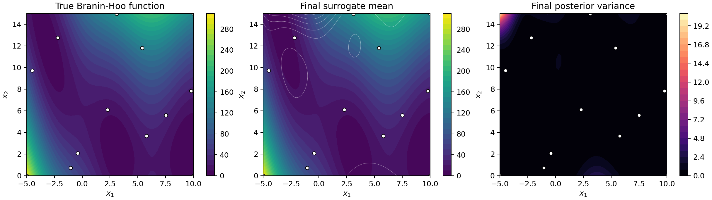

Cost-Aware Active Learning on the 2D Branin-Hoo Function#
Overview#
This tutorial demonstrates a cost-aware sequential design workflow on the 2D Branin-Hoo function. The surrogate starts from an initial Latin hypercube design of 10 function evaluations. At each active-learning step, the algorithm chooses the next observation from one shared candidate set:
a new function evaluation,
a first-order directional derivative at an existing function site, or
a second-order directional derivative at an existing function site.
The candidate score is a prior-relative uncertainty reduction per unit cost. This lets inexpensive derivative observations compete directly with more expensive function evaluations.
In this example, the model is allowed to acquire both first- and second-order directional derivatives. The figures below show how the design evolves over a few sequential steps and what the final surrogate looks like.
—
Step 1: Define the Branin-Hoo Function#
The Branin-Hoo function is a standard 2D test function on \(x_1 \in [-5, 10]\) and \(x_2 \in [0, 15]\):
For derivative-enhanced active learning, we provide the analytical gradient and Hessian. The gradient supplies first-order directional derivatives, and the Hessian supplies pure second directional derivatives \(v^T H(x) v\).
import numpy as np
A = 1.0
B = 5.1 / (4 * np.pi**2)
C = 5.0 / np.pi
R = 6.0
S = 10.0
T = 1.0 / (8.0 * np.pi)
BOUNDS = np.array([[-5.0, 10.0], [0.0, 15.0]])
def branin(X):
X = np.atleast_2d(X)
x1, x2 = X[:, 0], X[:, 1]
term = x2 - B * x1**2 + C * x1 - R
y = A * term**2 + S * (1 - T) * np.cos(x1) + S
return y.reshape(-1, 1)
def branin_grad(X):
X = np.atleast_2d(X)
x1, x2 = X[:, 0], X[:, 1]
term = x2 - B * x1**2 + C * x1 - R
df_dx1 = 2 * A * term * (-2 * B * x1 + C) - S * (1 - T) * np.sin(x1)
df_dx2 = 2 * A * term
return np.column_stack([df_dx1, df_dx2])
def branin_hess(X):
X = np.atleast_2d(X)
x1, x2 = X[0, 0], X[0, 1]
term = x2 - B * x1**2 + C * x1 - R
dterm_dx1 = -2 * B * x1 + C
d2term_dx1 = -2 * B
h11 = 2 * A * (dterm_dx1**2 + term * d2term_dx1) - S * (1 - T) * np.cos(x1)
h12 = 2 * A * dterm_dx1
h22 = 2 * A
return np.array([[h11, h12], [h12, h22]])
—
Step 2: Configure the Active-Learning Run#
The active-learning driver is AdaptiveDirectionalGP. Here we start
with 10 initial function observations and run up to 15 active-learning
steps.
The cost model in this tutorial is:
function value:
c_f = 1.0first directional derivative:
c1 = 0.25second directional derivative:
c2 = 0.35
This intentionally makes derivative observations cheaper than function evaluations, while still allowing the acquisition function to pick a new function value when its uncertainty-per-cost score is better.
from adaptive_doe import AdaptiveDirectionalGP
al = AdaptiveDirectionalGP(
func=branin,
grad_func=branin_grad,
hess_func=branin_hess,
acquire_second_order=True,
bounds=BOUNDS,
n_init=10,
rel_tol=0.00,
n_iter=15,
seed=11,
c_f=1.0,
c1=0.25,
c2=0.35,
max_directions=2,
optimizer_kwargs={
"pop_size": 40,
"n_generations": 20,
"local_opt_every": 20,
"debug": False,
},
)
history = al.run()
If this code is run outside the active_learning directory, add that
directory to PYTHONPATH first. The figure-generation script at the end of
this tutorial does that path setup automatically.
Explanation:
acquire_second_order=Trueallows second-order directional derivatives to enter the candidate set.max_directions=2allows up to two derivative directions per function site.rel_tol=0.00keeps every candidate with strictly positive prior-relative uncertainty; tightening this would discard low-information picks.historyrecords the selected candidate type, score, cumulative cost, and training-set counts after each step.
—
Step 3: Inspect the Sequential Design#
The following figure shows the design after a few active-learning steps. White circles are function-evaluation sites. Red arrows show acquired first-order directional derivatives. Cyan square markers/arrows indicate locations and directions where second-order directional information was also selected.
{kind=link}

In this run, the algorithm starts by spending budget on derivative information at existing sites. This is typical when gradients are relatively cheap: a directional derivative can sharply reduce local uncertainty without paying for a new function solve. When the function-evaluation candidate becomes more valuable per unit cost, it can still be selected by the same scoring rule.
—
Step 4: Inspect the Final Surrogate#
After the active-learning loop, query the GP posterior on a grid:
from posterior_queries import query_function_posterior_batched
def make_grid(n_per_axis):
x1 = np.linspace(BOUNDS[0, 0], BOUNDS[0, 1], n_per_axis)
x2 = np.linspace(BOUNDS[1, 0], BOUNDS[1, 1], n_per_axis)
X1, X2 = np.meshgrid(x1, x2)
X = np.column_stack([X1.ravel(), X2.ravel()])
return X, X1, X2
X_grid, X1, X2 = make_grid(75)
mean, var = query_function_posterior_batched(
al.gp_model, al.params, X_grid, batch_size=250)
The final surrogate can then be compared against the true Branin-Hoo function. The posterior variance panel highlights where the model remains least certain after the sequential design.
{kind=link}

For the figure-generation run used in this tutorial, the final design contains:
13 function-evaluation sites,
12 first-order directional derivative observations,
6 second-order directional derivative observations.
The final grid RMSE recorded on a 25 by 25 test grid was approximately
0.70. The exact value can vary slightly with optimizer settings and
random seed.
—
Reproducing the Figures#
The figures on this page are generated by:
python docs/source/JetGP_module_examples/active_learning/active_learning_branin_hoo.py
The script writes:
docs/source/_static/active_learning_branin_sequence.pngdocs/source/_static/active_learning_branin_surrogate.png
Summary#
This tutorial shows how cost-aware active learning can combine function values, first-order directional derivatives, and second-order directional derivatives inside a single sequential design loop. On the Branin-Hoo function, the method uses cheap derivative observations to enrich an initial 10-point design before forming the final GDDEGP surrogate.